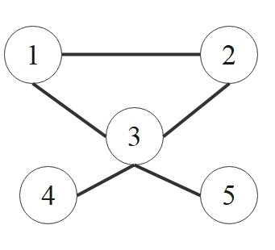

Graph Laplacian Fundamentals
The graph Laplacian is a matrix operator that plays a central role in spectral graph theory.
It's a fundamental tool that captures the connectivity and structure of a graph, enabling powerful
analytical techniques. Building on your knowledge of
graph theory and eigenvalues,
we'll explore its forms and properties.
The Unnormalized Laplacian
For a graph \(G\) with \(n\) vertices, its structure can be represented by an adjacency matrix
\(\boldsymbol{A}\), where \(A_{ij} = 1\) if vertices \(i\) and \(j\) are connected (and 0 otherwise).
The degree matrix \(\boldsymbol{D}\) is a diagonal matrix where \(D_{ii}\) is the
degree of vertex \(i\).
The unnormalized graph Laplacian \(\boldsymbol{L}\) is defined as:
\[
\boldsymbol{L} = \boldsymbol{D} - \boldsymbol{A}
\]
Here is a concrete example:

\[
\underbrace{
\begin{bmatrix} 2 & 0 & 0 & 0 & 0 \\
0 & 2 & 0 & 0 & 0 \\
0 & 0 & 4 & 0 & 0 \\
0 & 0 & 0 & 1 & 0 \\
0 & 0 & 0 & 0 & 1 \\
\end{bmatrix}
}_{\boldsymbol{D}}
-
\underbrace{
\begin{bmatrix} 0 & 1 & 1 & 0 & 0 \\
1 & 0 & 1 & 0 & 0 \\
1 & 1 & 0 & 1 & 1 \\
0 & 0 & 1 & 0 & 0 \\
0 & 0 & 1 & 0 & 0 \\
\end{bmatrix}
}_{\boldsymbol{A}}
=
\underbrace{
\begin{bmatrix} 2 & -1 & -1 & 0 & 0 \\
-1 & 2 & -1 & 0 & 0 \\
-1 & -1 & 4 & -1 & -1 \\
0 & 0 & -1 & 1 & 0 \\
0 & 0 & -1 & 0 & 1 \\
\end{bmatrix}
}_{\boldsymbol{L}}
\]
The Laplacian Quadratic Form (Measuring Smoothness)
A key insight into the Laplacian comes from its quadratic form.
If we define a function (or "signal") \(\boldsymbol{f}\) on the graph's vertices, where
\(\boldsymbol{f} \in \mathbb{R}^n\) and \(f_i\) is the value at vertex \(i\), the
quadratic form measures the "smoothness" of the signal:
\[
\boldsymbol{f}^\top \boldsymbol{L} \boldsymbol{f} = \sum_{(i,j) \in E} w_{ij}(f_i - f_j)^2
\]
(Assuming edge weights \(w_{ij}\), which are 1 for an unweighted graph).
This expression, known as the Dirichlet energy, shows that a signal \(\boldsymbol{f}\)
is "smooth" (i.e., \(\boldsymbol{f}^\top \boldsymbol{L} \boldsymbol{f}\) is small) if adjacent
vertices have similar values. The Laplacian is thus an operator that measures
the total variance of a signal across the graph's edges.
Normalized Laplacians
The unnormalized Laplacian \(\boldsymbol{L}\) can be biased by vertices with
large degrees. To address this, two normalized Laplacians are commonly used,
especially in spectral clustering and graph neural networks (GNNs):
-
Symmetric Normalized Laplacian (\(\mathcal{L}_{sym}\)):
\[
\mathcal{L}_{sym} = \boldsymbol{D}^{-1/2} \boldsymbol{L} \boldsymbol{D}^{-1/2} = \boldsymbol{I} - \boldsymbol{D}^{-1/2} \boldsymbol{A} \boldsymbol{D}^{-1/2}
\]
Its eigenvalues are normalized to the range \([0, 2]\), making it useful for spectral analysis and GNNs.
-
Random Walk Normalized Laplacian (\(\mathcal{L}_{rw}\)):
\[
\mathcal{L}_{rw} = \boldsymbol{D}^{-1} \boldsymbol{L} = \boldsymbol{I} - \boldsymbol{D}^{-1} \boldsymbol{A}
\]
This form is closely related to the transition matrix of a random walk on the graph (\(\boldsymbol{P} = \boldsymbol{D}^{-1}\boldsymbol{A}\)).
Spectral Properties
The "spectral" in spectral graph theory refers to the eigenvalues
and eigenvectors of the graph Laplacian. Since \(\boldsymbol{L}\)
(and \(\mathcal{L}_{sym}\)) is real and symmetric, it has a complete set of
real eigenvalues and orthonormal eigenvectors.
The eigendecomposition of the unnormalized Laplacian \(\boldsymbol{L}\) is:
\[
\boldsymbol{L} = \boldsymbol{V}\,\boldsymbol{\Lambda}\,\boldsymbol{V}^\top,
\quad
\boldsymbol{\Lambda} = \mathrm{diag}(\lambda_0, \lambda_1, \dots, \lambda_{n-1}),
\]
with ordered eigenvalues
\[
0 = \lambda_0 \le \lambda_1 \le \cdots \le \lambda_{n-1},
\]
and orthonormal eigenvectors \(\boldsymbol{v}_0, \dots, \boldsymbol{v}_{n-1}\)
(which form a basis for \(\mathbb{R}^n\)).
The Smallest Eigenvalue (\(\lambda_0\))
The smallest eigenvalue \(\lambda_0\) is always 0. Its corresponding eigenvector
is the constant vector \(\boldsymbol{v}_0 = \boldsymbol{1}\) (a vector of all ones).
\[
\boldsymbol{L}\boldsymbol{1} = (\boldsymbol{D} - \boldsymbol{A})\boldsymbol{1} = \boldsymbol{D}\boldsymbol{1} - \boldsymbol{A}\boldsymbol{1} = \boldsymbol{d} - \boldsymbol{d} = \boldsymbol{0}
\]
(where \(\boldsymbol{d}\) is the vector of degrees).
Eigenvalue Multiplicity and Connectivity
The multiplicity of the zero eigenvalue (how many times \(\lambda_k = 0\))
is equal to the number of connected components in the graph. For any
connected graph, \(\lambda_0 = 0\) is a simple eigenvalue, meaning \(\lambda_1 > 0\).
The Fiedler Vector and Algebraic Connectivity
The second smallest eigenvalue, \(\lambda_1\), is arguably the most important.
The Fiedler Vector and Algebraic Connectivity
The eigenvalue \(\lambda_1\) is called the
algebraic connectivity
(or
Fiedler value) of the graph.
- \(\lambda_1 > 0\) if and only if the graph is connected.
- A larger \(\lambda_1\) indicates a more "well-connected" graph (less of a "bottleneck").
The corresponding eigenvector \(\boldsymbol{v}_1\), known as the
Fiedler vector,
is central to spectral clustering. The sign of its entries (+/-) provides a natural
partition of the graph's vertices into two sets, often revealing the graph's weakest link.
The Spectral Gap and Cheeger's Inequality
The "spectral gap" (the magnitude of \(\lambda_1\)) is formally related to the
graph's connectivity by Cheeger's inequality.
Cheeger's Inequality
Let \(h(G)\) be the Cheeger constant, which measures the "best" partition
of the graph by finding the minimum "cut" normalized by the size of the smaller set:
\[
h(G) = \min_{S \subset V, 0 < |S| \leq n/2} \frac{|\partial S|}{\min(|S|, |V \setminus S|)}
\]
where \(|\partial S|\) is the number of edges between \(S\) and its complement \(V \setminus S\).
Cheeger's inequality bounds \(\lambda_1\) using this constant:
\[
\frac{h(G)^2}{2d_{max}} \leq \lambda_1 \leq 2h(G)
\]
This shows that a small \(\lambda_1\) (small spectral gap) implies the
existence of a "bottleneck" cut (small \(h(G)\)), and vice-versa.
Graph Signal Processing (GSP)
The GSP framework provides a crucial link between graph theory and classical signal analysis. It
re-interprets the Laplacian's eigenvectors as a Fourier basis for signals on the graph,
making it the natural generalization of t
he classical Fourier transform to irregular domains.
Graph Fourier Transform (GFT)
Let \(\boldsymbol{V} = [\boldsymbol{v}_0, \boldsymbol{v}_1, \ldots, \boldsymbol{v}_{n-1}]\)
be the matrix of orthonormal eigenvectors of \(\boldsymbol{L}\).
For any signal \(\boldsymbol{f}\) on the graph, its Graph Fourier Transform
(\(\hat{\boldsymbol{f}}\)) is its projection onto this basis:
\[
\hat{\boldsymbol{f}} = \boldsymbol{V}^T \boldsymbol{f}
\quad \text{(Analysis)}
\]
And the inverse GFT reconstructs the signal:
\[
\boldsymbol{f} = \boldsymbol{V} \hat{\boldsymbol{f}} = \sum_{k=0}^{n-1} \hat{f}_k \boldsymbol{v}_k
\quad \text{(Synthesis)}
\]
The eigenvalues \(\lambda_k\) represent frequencies:
-
Small \(\lambda_k\) (e.g., \(\lambda_0, \lambda_1\)) ↔ Low Frequencies:
The corresponding eigenvectors \(\boldsymbol{v}_k\) vary slowly across edges
(they are "smooth").
-
Large \(\lambda_k\) ↔ High Frequencies:
The eigenvectors \(\boldsymbol{v}_k\) oscillate rapidly, with adjacent
nodes having very different values.
This connects back to the Dirichlet energy. By expanding \(\boldsymbol{f}\) in the
eigenbasis, we can see how "rough" it is:
\[
\boldsymbol{f}^\top \boldsymbol{L} \boldsymbol{f} =
\boldsymbol{f}^\top (\boldsymbol{V} \boldsymbol{\Lambda} \boldsymbol{V}^\top) \boldsymbol{f} =
(\boldsymbol{V}^T \boldsymbol{f})^\top \boldsymbol{\Lambda} (\boldsymbol{V}^T \boldsymbol{f}) =
\hat{\boldsymbol{f}}^\top \boldsymbol{\Lambda} \hat{\boldsymbol{f}} =
\sum_{k=0}^{n-1} \lambda_k \hat{f}_k^2
\]
This is the graph equivalent of Parseval's theorem. It shows that the
signal's energy is the sum of its spectral components, weighted by
their corresponding frequencies (\(\lambda_k\)).
Practical Computations
For large graphs (e.g., social networks with millions of nodes) seen in
modern applications, computing the full eigendecomposition (\(O(n^3)\)) is impossible.
Instead, iterative methods are used to find only the few
eigenvectors and eigenvalues that are needed (typically the smallest ones).
-
Power Iteration: A simple method to find the dominant
eigenvector (corresponding to \(\lambda_{max}\)). Can be adapted (as
"inverse iteration") to find the smallest eigenvalues.
-
Lanczos Algorithm: A powerful iterative method for
finding the \(k\) smallest (or largest) eigenvalues and eigenvectors
of a symmetric matrix. It is far more efficient than full decomposition
when \(k \ll n\).
Modern Applications
The properties of the graph Laplacian are fundamental to many
algorithms in machine learning and data science.
Spectral Clustering
One of the most powerful applications of the Laplacian is spectral clustering.
The challenge with many real-world datasets is that clusters are not
"spherical" or easily separated by distance, which is a key assumption of
algorithms like K-means.
Spectral clustering re-frames this problem: instead of clustering points by distance,
it clusters them by connectivity. The Fiedler vector (\(\boldsymbol{v}_1\))
and the subsequent eigenvectors (\(\boldsymbol{v}_2, \dots, \boldsymbol{v}_k\))
provide a new, low-dimensional "spectral embedding" of the data.
In this new space, complex cluster structures (like intertwined moons or spirals)
are "unrolled" and often become linearly separable.
The general algorithm involves using the first \(K\) eigenvectors of the
Laplacian (often \(\mathcal{L}_{sym}\)) to create an \(N \times K\)
embedding matrix, and then running a simple algorithm like K-means on
the *rows* of that matrix.
We cover this topic in full detail, including the formal algorithm and
its comparison to K-means, on our dedicated page.
→ See: Clustering Algorithms
Graph Neural Networks (GNNs)
Many GNNs, like Graph Convolutional Networks (GCNs), are based on
spectral filtering. The idea is to apply a filter
\(g(\boldsymbol{\Lambda})\) to the graph signal's "frequencies."
\[
\boldsymbol{f}_{out} = g(\boldsymbol{L}) \boldsymbol{f}_{in} =
\boldsymbol{V} g(\boldsymbol{\Lambda}) \boldsymbol{V}^T \boldsymbol{f}_{in}
\]
This is a "convolution" in the graph spectral domain.
Directly computing this is too expensive. Instead, methods like ChebNet
approximate the filter \(g(\cdot)\) using a \(K\)-th order polynomial:
\[
g_\theta(\boldsymbol{L}) \approx \sum_{k=0}^K \theta_k T_k(\tilde{\boldsymbol{L}})
\]
where \(T_k\) are Chebyshev polynomials and \(\tilde{\boldsymbol{L}}\) is
the scaled Laplacian (\(\mathcal{L}_{sym}\)). This approximation
is crucial because it allows for localized and
efficient computations (a \(K\)-hop neighborhood) without
ever computing the eigenvectors. The standard GCN is a
first-order approximation (\(K=1\)) of this process.
Diffusion, Label Propagation, and GNNs
The Laplacian is the "generator" of diffusion processes on graphs.
This isn't just a theoretical curiosity from physics; it's the
mathematical foundation for many GNN architectures and semi-supervised
learning algorithms.
For example, the classic Label Propagation algorithm for
semi-supervised learning is a direct application of this. You can imagine
"clamping" the "heat" of labeled nodes (e.g., 1 for Class A, 0 for Class B)
and letting that heat diffuse through the graph to unlabeled nodes. The final
"temperature" of a node is its classification.
The formal continuous-time model for this is the
graph heat equation:
Heat Diffusion on Graphs
\[
\frac{\partial \boldsymbol{u}}{\partial t} = -\boldsymbol{L} \boldsymbol{u}
\]
The solution, which describes how an initial heat distribution
\(\boldsymbol{u}(0)\) spreads over the graph, is given by:
\[
\boldsymbol{u}(t) = e^{-t\boldsymbol{L}} \boldsymbol{u}(0)
\]
Where \(e^{-t\boldsymbol{L}} = \sum_{k=0}^{\infty} \frac{(-t\boldsymbol{L})^k}{k!} =
\boldsymbol{V} e^{-t\boldsymbol{\Lambda}} \boldsymbol{V}^T\).
This solution, \(e^{-t\boldsymbol{L}}\), is known as the
graph heat kernel. It's a powerful low-pass filter
(since high-frequency components \(e^{-t\lambda_k}\) with large \(\lambda_k\)
decay fastest). This process of diffusion is the formal explanation
for the over-smoothing problem in deep GNNs [2].
Many GNNs, like the standard GCN, are computationally efficient approximations
(e.g., a simple, first-order polynomial) of this spectral filtering [1].
More advanced models take this connection to its logical conclusion,
explicitly modeling GNNs as continuous-time graph differential equations [3].
This links the abstract math of DEs directly
to the design of modern AI models.
Other Applications
- Recommender Systems: Used extensively in industry to model user-item interactions as a graph, often leveraging **matrix factorization on the Laplacian** or **graph-based diffusion models** to predict preferences.
- Protein Structure: Foundational to bioinformatics, where GNNs (like those used by AlphaFold) model the 3D structure of proteins by treating amino acids as nodes and using **Laplacian-based graph convolutions** to capture bond geometry.
- Social Network Analysis: Continues to be the primary method for **community detection** (spectral clustering) and identifying network bottlenecks (algebraic connectivity $\lambda_1$) at scale.
- Computer Vision: Historically used for **image segmentation** and denoising via graph cuts (minimum cut problems, which are directly related to the Laplacian quadratic form).
Core Papers for this Section
-
Kipf, T. N., & Welling, M. (2017). Semi-Supervised Classification with Graph Convolutional Networks.
International Conference on Learning Representations (ICLR).
-
Li, Q., Han, Z., & Wu, X. M. (2018). Deeper Insights into Graph Convolutional Networks.
Proceedings of the AAAI Conference on Artificial Intelligence.
-
Poli, M., Massaroli, S., et al. (2020). Graph Neural Ordinary Differential Equations (GRAND).
Advances in Neural Information Processing Systems (NeurIPS).